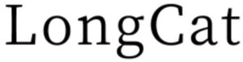

Trade Mark Journal No.2026/006 6 February 2026
WO0000001898076 (9,35,38,42)
Office of origin: China
Date of International Registration:4 September 2025
Date of designation in the UK:
4 September 2025

- Class 9
- Decorative magnets; humanoid robots with artificial intelligence for use in preparing beverages; electronic publications, downloadable; humanoid robots with communication and learning functions for assisting humans and for entertainment purposes; computer peripheral devices; interactive touchscreen terminals; humanoid robots with artificial intelligence for scientific research; face recognition equipment; computer programs, downloadable; downloadable mobile application software; computer chatbot software for simulating conversations; downloadable computer software for data collection, analysis, and organization in the field of deep learning; mobile phone cases; computer software platforms, recorded or downloadable; unconfigured, user-programmable humanoid robots; telepresence robots; home automation hubs.
- Class 35
- Advertising services; providing commercial information and advice for consumers in the choice of products and services; sales promotion for others; personnel management consultancy; administrative processing of purchase orders; compilation of information into computer databases; data processing services, namely office functions; systemization of information into computer databases; computer data entry services; drawing up of statements of accounts.
- Class 38
- Transmission of news; broadcasting programs via a global computer network; message sending; providing internet chatrooms; providing user access to global computer networks; providing online forums; providing access to databases; video conferencing services; video-on-demand transmission; communications by computer terminals.
- Class 42
- Computer technology consultancy; cloud computing consultancy; platform as a service [PaaS]; providing search engines for the internet; technology consultation in the field of artificial intelligence; research in the field of artificial intelligence technology; technological research; computer software design; software as a service [SaaS].
Beijing Sankuai Technology Co., Ltd.
Representative: Beijing LongAn Law Firm, Floor 8, Block C, BIC Tower,, 21 Jian Guo Men Wai Street, 100020 Beijing, CHINA